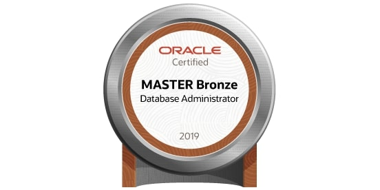

🕓本記事の最終更新日は
です。
english↗
♥このブログについて
このブログはエンジニア役に立つことを目指しています。
まだまだ勉強中の身ですが、私が困った等身大のトピックで誰かの助けになることもあるかもしれない考えて、背伸びせずに私が欲しかった記事を作成します。
一人のエンジニアがどう成長していくかを見ることで、後輩エンジニアたちのモデルケースとして参考になればいいなと考えています。
♥お勧めの記事
♥筆者について
■自己紹介
プログラミングが好きなソフトウェアエンジニアです。
以前はプログラマーをやっていました。 ソフトウェアエンジニアになってから、プログラミング以外のITの知識が全然足りなくて、勉強中です。
モットーは「行動せざる者、願うべからず」です。（そんなことわざないですが、私が作りました。）
■経歴
私のエンジニアになるまでの軌跡は 一浪日大でもホワイト企業に就職する方法 をご覧ください✨
| いつ | どうした |
|---|---|
| 2018年3月 | 高校卒業 |
| 2018年4月~2019年2月 | 四谷学院で浪人 |
| 2019年4月 | 日本大学入学する。物理学を専攻 |
| 2021年3月~2023年3月 | プログラマーの長期インターンでJava , C# , プログラミングの思考を学ぶ |
| 2021年8月~2022年11月 | プログラマーのバイトでC# , アジャイル開発を学ぶ |
| 2022年2月~2023年3月 | 研究室で研究頑張る🔥python , Shell Script , 量子力学を学ぶ |
| 2023年3月24日 | 物理学会で発表✨ |
| 2023年3月 | 日本大学を卒業 |
| 2023年4月 | ソフトウェアエンジニアとして就職 |
| 2023年8月 | 念願の製品開発チームに配属され、Javaでゴリゴリ開発 |
| 2024年4月 | 昇格する✨ |
| 2024年9月 | 製品開発チームので別製品を作り始める。TypeScript×React , AWSを必死に学び中🔥 |
■保有資格・試験
- ITパスポート試験
- Oracle Certified Java Programmer, Silver SE11（通称：Java Silver）
- Bronze DBA Oracle Database Fundamentals（通称：Oracle Master Bronze）
- 基本情報技術者試験
- 生成AIパスポート試験

